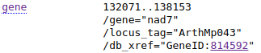

Pobieranie sekwencji z bazy GenBank i praca w plikami FASTA przy pomocy linii komend
Dlaczego linia komend?
Pobieranie sekwencji przy użyciu narzędzi uruchamianych z linii komend jest w niektórych sytuacjach łatwiejsze, zwłaszcza gdy wiemy, które sekwencje (albo ich fragmenty) i/lub chcemy pobrać ich wiele.
Dostęp do GenBank-u przy pomocy narzędzi Entrez Direct
,,Entrez Direct'' to grupa programów opublikowanych przez NCBI umożliwiających dostęp do baz danych tej organizacji. Podręcznik do pakietu (wraz z instrukcją instalacji) pt. Entrez Direct: E-utilities on the UNIX Command Line można znaleźć pod adresem https://www.ncbi.nlm.nih.gov/books/NBK179288/. Nie będziemy oczywiście poznawać dogłębnie wszystkich narzędzi ale pokażę kilka przydatnych komend i sposobów ich wykorzystania.
Wyszukiwanie sekwencji - esearch
Do wyszukiwania informacji w bazach danych służy narzędzie esearch. Przy podstawowym użyciu, przyjmuje dwa argumenty:
-db- określający bazę do której zostanie wysłane zapytanie-query- zapytanie
Wywołanie programu będzie wyglądało tak:
esearch -db identyfikator_bazy -query zapytanie
Jeśli zapytanie składa się z wielu słów, należy je zamknąć w cudzysłowach.
Lista identyfikatorów wybranych baz danych znajduje się pod adresem https://www.ncbi.nlm.nih.gov/books/NBK25497/table/chapter2.T._entrez_unique_identifiers_ui/?report=objectonly. Jak widać jest ich wiele. Nas będzie interesowała teraz baza ,,Nucleotide'', która ma identyfikator nuccore lub nucleotide. To właśnie z niej wcześniej korzystaliśmy przez stronę internetową.
Warto też przejrzeć wbudowaną pomoc programu, gdzie znajdziemy nie tylko identyfikatory baz ale też opisy innych opcji programu. Uruchamiamy ją wpisując:
$: esearch -h
Uruchom polecenie:
$: esearch -db nucleotide -query "atp6 Orobanche"
Pokaże się wynik:
<ENTREZ_DIRECT>
<Db>nucleotide</Db>
<WebEnv>NCID_1_33234224_130.14.18.34_9001_1517069868_100176055_0MetA0_S_MegaStore_F_1</WebEnv>
<QueryKey>1</QueryKey>
<Count>17</Count>
<Step>1</Step>
</ENTREZ_DIRECT>
Nie wydaje się zbyt przydatny, ale można zrozumieć, że znaleziono 17 wyników. Nie widać żadnych sekwencji. Zaraz pokażę jak uzyskać bardziej użyteczny rezultat.
Pobieranie sekwencji - efetch
Drugim narzędziem pakietu Entrez Direct z którego będziemy korzystać jest efetch służący, jak wskazuje nazwa, do pobierania danych.
Znając numer dostępowy sekwencji można ją pobrać w ten sposób:
efetch -db identyfikator_bazy -format format_wyniku -id numer_dostępowy
Na przykład:
$: efetch -db nucleotide -id KU180461 -format fasta
Wynik jest zgodny z oczekiwaniami:
>KU180461.1 Orobanche coerulescens clone 12 ATPase subunit 6 (atp6) gene, partial cds; mitochondrial
CTGCTAACTCTCAGTTTGGTCCTACTTCTGATTCATTTTGTTACTAAAAAGGGAGGAGGAAACTCAGTAC
CAAATGCTTGGCAATCCGTGGTAGAGTTTATTTATGATTTCGTGCTGAACCTGGTAAACGAACAAATAGG
GGGTCTTTCCGGAAATGTTAAACAAAAGTTTTTCCCTTGCATCTTGGTCACTTTTACTTTTTTGTTATTT
TGTAATCTTCAGGGTATGATACCTTATAGCTTCACAGTTACAAGTCATTTTCTCATTACTTTAGGTCTCT
CATTTTCTCTTTTTATTGGCATTACTATAGTGGGATTTCAAAGAAATGGGCTTCATTTTTTAAGCTTCTT
ATTACCCGCAGGAGTCCCACTGCCATTAGCACCTTTTTTAGTACTCCTTGAGCTAATTTCTTATTGTTTT
CGCGCATTAAGCTTAGGAATACGTTTATTTGCTAATATGATGGCCGGTCATAGTTTAGTAAAGATTTTAA
GTGGGTTCGCTTGGACTATGCTATGTATGAATGATCTTTTGTATTTTATAGGGGATCTTGGTCCTTTATT
TATAGTTCTTGCATTAACCGGTCTTGAATTAGGTGTAGCTATATCACAAGCTCATGTTTCTACGATCTCA
ATCTGTATTTAC
Wynik oczywiście możemy zapisać w pliku używając znaku >:
efetch -db nucleotide -id KU180461 -format fasta > atp6.fasta
Przejrzyj pomoc programu, którą wywołasz komendą:
efetch -h
Poeksperymentuj z różnymi formatami wyniku.
Teraz sprobujemy użyć polecenia efetch do pobrania serii sekwencji, tych samych, które należało pobrać przy pomocy przeglądarki w poprzedniej części.
Zapisz ich numery, po jeden w każdej linii w pliku atp6_numery.txt
KU180471
KU180476
FJ595983
KC879635
HQ593782
KU180469
KU180474
KU180475
KU180468
KU180466
AF095276
Teraz napiszemy skrypt (, który w pętli będzie kolejno odczytywał numery sekwencji i przekazywał je do poleceniaefetch`, które będzie je pobierało i zapisywało w pliku. Nazwę pliku z danymi i nazwę pliku wynikowego będziemy podawać jako argumenty przy wywoływaniu skryptu.
#!/bin/bash
# Nazwa pliku z danymi podana jako pierwszy argument
dane=$1
# Nazwa pliku wynikowego podana jako drugi argument
fileout=$2
# Tworzony jest plik wynikowy, jeśli istnieje zostaje nadpisany
echo > $fileout
# Pętla odczytująca numery sekwencji z pliku $dane,
# są one przechowywane w zmiennej nrGB
while read nrGB
do
# Informacje o obieraniu i zapisywaniu sekwencji
echo "Pobieram sekwencję $nrGB i zapisuję do pliku $fileout"
# Pobieranie i zapisywanie sekwencji
efetch -db nucleotide -id $nrGB -format fasta >> $fileout
done < $dane
Następnie uruchamiamy skrypt:
$: ./pobierz_sekwencje.sh atp6_numery.txt atp6_sekwencje.fasta
Pobieram sekwencję KU180471 i zapisuję do pliku atp6_sekwencje.fasta
Pobieram sekwencję KU180476 i zapisuję do pliku atp6_sekwencje.fasta
Pobieram sekwencję FJ595983 i zapisuję do pliku atp6_sekwencje.fasta
Pobieram sekwencję KC879635 i zapisuję do pliku atp6_sekwencje.fasta
Pobieram sekwencję HQ593782 i zapisuję do pliku atp6_sekwencje.fasta
Pobieram sekwencję KU180469 i zapisuję do pliku atp6_sekwencje.fasta
Pobieram sekwencję KU180474 i zapisuję do pliku atp6_sekwencje.fasta
Pobieram sekwencję KU180475 i zapisuję do pliku atp6_sekwencje.fasta
Pobieram sekwencję KU180468 i zapisuję do pliku atp6_sekwencje.fasta
Pobieram sekwencję KU180466 i zapisuję do pliku atp6_sekwencje.fasta
Pobieram sekwencję AF095276 i zapisuję do pliku atp6_sekwencje.fasta
Sprawdź zawartość pliku wynikowego.
efetch - pobieranie fragmentów sekwencji
Dzięki programowi efetch można też uzyskać fragment sekwencji podając miejsce pierwszego i ostatniego nukleotydu żądanego fragmentu. Służą do tego opcje: -seq_start i -seq_stop.
Na przykład wytnijmy sekwencję genu nad2 z genomu mitochondrialnego Arabidopsis thaliana o identyfikatorze NC_001284. Miejsca początku i końca genu odczytamy z wyniku wyszukiwania:

Teraz przekażmy je do polecenia:
efetch -db nuccore -id NC_001284 -format fasta -seq_start 134071 -seq_stop 138153
Otrzymamy żądany fragment genomu.
Teraz powróćmy do problemu pobieraniu sekwencji we fragmentach z którym zetknęliśmy się w lekcji poświęconej pobieraniu sekwencji z GenBank-u przy pomocy strony internetowej. Sekwencja genu nad2 w genomie Arabidopsis thaliana (nr. NC_001284) występowała tam w dwu, oddzielonych od siebie fragmentach, przy czym część kodująca (CDS) miała aż pięć części.

W dodatku były to sekwencje komplementarne (i odwrócone). Teraz pokażę jak używając prostego skryptu pobrać żądane fragmenty i połączyć je w jedną sekwencję.
Można oczywiście po kolei wykonywać polecenia pobierania fragmentów z sekwencji, za pomocą narzędzia efetch jak pokazałem powyżej i dołączać wyniki do pliku FASTA.
efetch -db nuccore -id NC_001284 -format fasta -seq_start 327890 -seq_stop 328078 > nad2_A_thaliana.fasta
efetch -db nuccore -id NC_001284 -format fasta -seq_start 329735 -seq_stop 330306 >> nad2_A_thaliana.fasta
efetch -db nuccore -id NC_001284 -format fasta -seq_start 332945 -seq_stop 333105 >> nad2_A_thaliana.fasta
efetch -db nuccore -id NC_001284 -format fasta -seq_start 79740 -seq_stop 80132 >> nad2_A_thaliana.fasta
efetch -db nuccore -id NC_001284 -format fasta -seq_start 81113 -seq_stop 81297 >> nad2_A_thaliana.fasta
Komendy możesz wpisywać i uruchamiać w terminalu, albo umieścić je w skrypcie (np. pobierz_odcinki.sh) i go uruchomić.
Otrzymany plik będzie miał taką zawartość:
>NC_001284.2:327890-328078 Arabidopsis thaliana mitochondrion, complete genome
TTAAAGATATGAACTGAGTGCCATTTGATGAGTAACTGAGAACAAAGGAGAGGGGTATAGCAAGGATGAA
GTAATGAAAAAGGAAGTCATTGCTAGTAGTAACGACTTATTACGATCCATTGGTTCATATAGAATCCATG
TCCTAGGTGTATCAAAAAACATTCTTTTCACTAAGCGTATATAATAAAA
>NC_001284.2:329735-330306 Arabidopsis thaliana mitochondrion, complete genome
ACGACCTATAACGCTAGTCACTACTCCCACTGGGGCTAGAAAGTAAGCCCCACAACCCAAAGCGGCGAAG
AACAAATAGAATTTGCTACAAAAGCCGGCTAACGGGGGTATTCCTGCGTATGAGAACATAGTAATGGAGA
AGGTAATAGCCGAAATAGGATTCGTTTTGGCTAGAGCGCCCAAATCCGCTATATATTTGACACGGGTTTG
CCGTAATGCTGAAACTATGGCGAATGCATCCATCGTCATTAATGCATAAATAAAGATACCAATTAGTAGT
GATTGAATTCCTTCTATGGTTCCACATGAGAAACCAGTACGAATATAACCTACATGTCCAATTGAACTAT
GAGCTAGAGGTCTTTTGACTTTCGTTTGGGCCATGGCGGCCAGTGCTCCTAAGATCATAGAAGCAATGCT
GCAGAAAAAGAAGATTTGTTGCAATGTAGCTCCATAGGAACCATAAATAGAAACACGTAAAATATTAGCA
GAAATAGAGATTTTAGGCGCAATAGAAAGGAATGCTGTAACCGGGGTGGGTGAACCCTCATAGATATCTG
GTGCCCACATAT
>NC_001284.2:332945-333105 Arabidopsis thaliana mitochondrion, complete genome
GAAAAGGAACTGCAGTGATCTTGAATAGGAATCCTACAGCGATAGACAGAATCCCCATAAAAATACCACT
AGATCGAGCACCAGTGATTTCGTATCCGGTCAAAATCTTGGCTAATTGATCGAAGTGGGTAGCTCCAGTA
GACCCATAGATCATGGAACAA
>NC_001284.2:79740-80132 Arabidopsis thaliana mitochondrion, complete genome
CCAAACAATAATATTCCAGAGGAAAATGCACCTAAGATCAAATATTTCGAGCCGGCTTCCGTGGAAAATT
CAGACTTTCTTTTTGATGCTGCGATTACATAAAAACATAAACTTTGAGGCTCAATAGCTAAATACATGGC
AATTAAATCATGAGCCGAGATCATAAAGAGCATACCGCGAGTAGGAAGTGGAATTAATACAATGAATTCA
AAAGCATCAAACCTCTCTTGGTCGGAAGAATCGAAACACATCGAAATGGTACCAGCCGTACTTAATAATA
GAAAGATTTGGCAGAAATATGTAAAATTGTCCCTCCTAAAAAGATTATTCCAGAATAAATGGGCAATAGT
TAGGAGAGGTGCGCCAGCGGCGAGCAGAAGCAAGGTTATTAGA
>NC_001284.2:81113-81297 Arabidopsis thaliana mitochondrion, complete genome
ACACTAAGTAATCCAAGCCAACCCACATTACTGGCTAACGGCGGATAATCATATTTCTTAGAGGTACTAA
ATACAACTCCATGAATGAGCAAAATGGAGGTTGCATTAATGATAAAGATCTCTGGGGAAACCGCTAAAAA
AAGATTGAACATGTGTGGGAGGATCCGAACGAATTCTGCTTTCAT
Zamiast uruchamiać wielokrotnie tą samą komendę, można utworzyć plik tekstowy z miejscami początku i końca fragmentów sekwencji a następnie stworzyć skrypt, który w pętli po kolei je pobierze i umieści w pliku.
Najpierw utworzymy plik, w którym zapiszemy kolejne miejsca początku i końca fragmentów sekwencji oddzielone znakiem tabulatora (odcinki.tsv).
327890 328078
329735 330306
332945 333105
79740 80132
81113 81297
Teraz skrypt:
#!/bin/bash
# Plik z danymi podany jako argument 1 przy uruchamianiu skryptu
data=$1
# Plik wyjściowy podany jako argument 2 przy uruchamianiu skryptu
fileout=$2
# Numer sekwencji w GenBank-u podany jako argument 3
nrGB=$3
# Tworzymy plik wejściowy, jeśli już istnieje to jego zawartość zostaje usunięta
echo > $fileout
# Pętla. Wartości start i stop odczytywane są z pliku $data
while read start stop
do
# Skrypt informuje, który fragment pobiera
echo "Pobieram fragment: $start - $stop z sekwencji $nrGB i zapisuję do pliku $fileout"
# Pobranie fragmentu i zapisanie do pliku
efetch -db nuccore -id $nrGB -format fasta -seq_start $start -seq_stop $stop >> $fileout
done < $data
$: ./pobierz_odcinki_petla.sh odcinki.tsv nad2_A_thaliana.fasta NC_001284
Pobieram fragment: 327890 - 328078 z sekwencji NC_001284 i zapisuję do pliku nad2_A_thaliana.fasta
Pobieram fragment: 329735 - 330306 z sekwencji NC_001284 i zapisuję do pliku nad2_A_thaliana.fasta
Pobieram fragment: 332945 - 333105 z sekwencji NC_001284 i zapisuję do pliku nad2_A_thaliana.fasta
Pobieram fragment: 79740 - 80132 z sekwencji NC_001284 i zapisuję do pliku nad2_A_thaliana.fasta
Pobieram fragment: 81113 - 81297 z sekwencji NC_001284 i zapisuję do pliku nad2_A_thaliana.fasta
Sprawdź plik wynikowy.
Łączymy efetch, sed, tr i rev
Jak widać poszczególne fragmenty występują oddzielnie. Teraz powinniśmy połączyć je w jedną sekwencję. Można to zrobić w edytorze tekstu ale od czego mamy linię komend i narzędzia sed, tr i rev?
Zadanie wykonamy w pięciu etapach:
- Usuniemy linie z opisami sekwencji
- Połączymy fragmenty w jedną sekwencję
- Przekształcimy ją w sekwencję komplementarną
- Odwrócimy sekwencje
- Dodamy opis w pierwszej linii pliku
Zastanów się, najpierw ogólnie, jak te zadania zrealizować używając programów sed, tr i rev?
- Usunąć linie zaczynające się od znaku
>:trlubsed - Usunąć wszystkie znaki końca linii:
\n:tr - Zmienić na sekwencję komplementarną:
tr - Odwrócić sekwencję:
rev - Wprowadzić do pierwszej linii pliku opis sekwencji
Teraz przekształćmy pomysł w konkretny kod. Utwórz skrypt polacz_odcinki.sh:
#!/bin/bash
# Nazwa pliku z sekwencjami
surowy=nad2_A_thaliana.fasta
# Plik wyjściowy
file=polaczony_$surowy
# Kopiujemy plik z sekwencjami do pliku wyjściowego,
# który będziemy modyfikować
cp $surowy $file
# Usuwanie linii z opisami, czyli linii zaczynających się od znaku >
sed -i '/^>/d' $file
# Łączymy wszystkie linie w jedną, usuwając oznaczenia końca linii
# Wynik umieszczamy w pliku tymczasowym
cat $file | tr -d "\n" > $file.tmp
# Zmieniamy na sekwencję komplementarną, wynik umieszczamy
# w drugim pliku wyjściowym
cat $file.tmp | tr "ACGT" "TGCA" > $file.tmp2
# Odwracamy sekwencję, wynik umieszczamy w pliku wyjściowym
# zmieniając jego zawartość
cat $file.tmp2 | rev > $file
# Wstawiamy pierwszą linię z opisem i znak nowej linii
sed -i '1s/^/>NC_001284_Arabidopsis_thaliana_nad2\n/' $file
# Usuwamy pliki tymczasowe
rm $file.tmp*
Można też skonstruować ,,jednolinijkowca'':
cat nad2_A_thaliana.fasta | sed '/^>/d' | tr -d "\n" | tr "ACGT" "TGCA" | rev | sed '1s/^/>NC_001284_Arabidopsis_thaliana_nad2\n/' > polaczony_RC_nad2_A_thaliana.fasta
Łączymy esearch i efetch
Dotychczas używaliśmy dwu narzędzi: służący do wyszukiwania esearch i pobierający sekwencje efetch oddzielnie. Ale możemy je razem połączyć za pomocą potoku tak aby wyszukiwanie połączyć z pobieraniem.
esearch -db nucleotide -query "atp6[All Fields] AND Orobanche[Organism]" | efetch -format fasta > atp6_Orobanche.fasta
samtools faidx- pobieranie sekwencji z pliku FASTA
Pobierz plik http://ggoralski.pl/files/filogenetyka-data/Orobanchaceae-trnL-trnF-aligned.fasta
Sprawdź jego zawartość. Używaliśmy go już we wcześniejszych ćwiczeniach, zawiera wyrównane sewkencje trnL-trnF.
Teraz sprawdź nazwy sekwencji używając komendy grep:
$: grep ">" Orobanchaceae-trnL-trnF-aligned.fasta
>KY484464_O._teucrii
>KY484493_O._flava
>KY484489_O._mayeri
>KY484471_O._kochii
>KY484474_O._elatior
>KU238865_O._coerulescens
>KY484502_P._ramosa
>KY484503_P._purpurea
>KX524675_Lindenbergia_siniaca
Teraz będziemy chcieli pobrać z pliku sekwencję o nazwie KX524675_Lindenbergia_siniaca. Można to zrobić oczywiście używając edytora tekstu lub programu do pracy z plikami FASTA, ale czasem wygodniej to zrobić używając linii komend. Użyjemy do tego zadania programu faidx, który jest częścią pakietu samtools.
Pakiet samtools zawiera wiele przydatnych programów do pracy z sekwencjami, przede wszystkim w innych formatach niż FASTA, ale faidx jest dość przydatne w codziennej pracy także w tym formacie.
Strona domowa projektu znajduje się pod adresem: http://www.htslib.org/. Tam też można przeczytać manuale programów.
Na Debianie można zainstalować pakiet komendą:
sudo apt-get install samtools
W innym przypadku, można pobrać pliki źródłowe ze strony i skompilować wg. znajdującej się tam instrukcji.
Uruchamianie narzędzi z pakietu samtools wygląda następująco:
samtools nazwa_narzedzia opcje
W przypadku faidx będzie to wyglądało tak:
samtools faidx opcje
Opcjami, które użyjemy będzie kolejno nazwa pliku, z którego pobierzemy sekwencję i nazwa sekwencji. Uruchom:
samtools faidx Orobanchaceae-trnL-trnF-aligned.fasta KX524675_Lindenbergia_siniaca
Na ekranie wyświetli się żądana sekwencja, oczywiście można ją zapisać w pliku używając >.
Zauważ, że podajemy pełną nazwę sekwencji (bez znaku >), wpisanie jej fragmentu nie zadziała. Może to być pewnym mankamentem, na przykład gdy nazwy są długie albo gdy chcemy pobrać wiele sekwencji, których nazwy mają jakąś część wspólną (np. nazwę rodzaju.). W taki przypadku pomocne będzie polecenie grep.
Uruchom:
$: grep "O." Orobanchaceae-trnL-trnF-aligned.fasta
>KY484464_O._teucrii
>KY484493_O._flava
>KY484489_O._mayeri
>KY484471_O._kochii
>KY484474_O._elatior
>KU238865_O._coerulescens
W ten sposób otrzymujemy pełne nazwy wszystkich sekwencji należących do Orobanche. Teraz powinniśmy je przekazać do polecenia faidx, ale najpierw musimy pozbyć się znaków >:
$: grep "O." Orobanchaceae-trnL-trnF-aligned.fasta | sed 's/>//'
KY484464_O._teucrii
KY484493_O._flava
KY484489_O._mayeri
KY484471_O._kochii
KY484474_O._elatior
KU238865_O._coerulescens
Czas użyć ich przy wywołaniu faidx. Polecenie:
grep "O." Orobanchaceae-trnL-trnF-aligned.fasta | sed 's/>//' | samtools faidx Orobanchaceae-trnL-trnF-aligned.fasta
nie zadziała. Trzeba wykorzystać xargs:
grep "O." Orobanchaceae-trnL-trnF-aligned.fasta | sed 's/>//' | xargs samtools faidx Orobanchaceae-trnL-trnF-aligned.fasta > Orobanche-trnL-trnF.fasta
Sprawdź zawartość pliku wynikowego.
Przy okazji pobierania sekwencji, można je oczywiście zmodyfikować. Na przykład możemy zmienić skrót O. na pełną nazwę rodzajową Orobanche i usunąć wszystkie znaki - oznaczające brak nukleotydu. Użyjemy w tym celu poecenia sed. Przy usuwaniu - pamiętaj o dodaniu g, który pozwala na wykonaniu polecenia na wszystkich znakach w linii.:
grep "O." Orobanchaceae-trnL-trnF-aligned.fasta | sed 's/>//' | xargs samtools faidx Orobanchaceae-trnL-trnF-aligned.fasta | sed 's/O\./Orobanche/' | sed 's/-//g' | > Orobanche-trnL-trnF.fasta